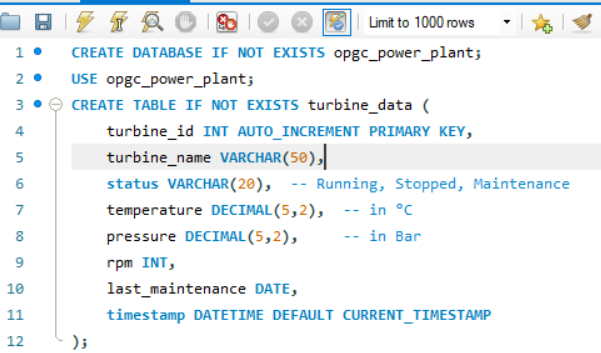
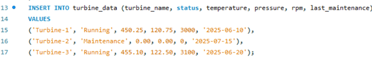
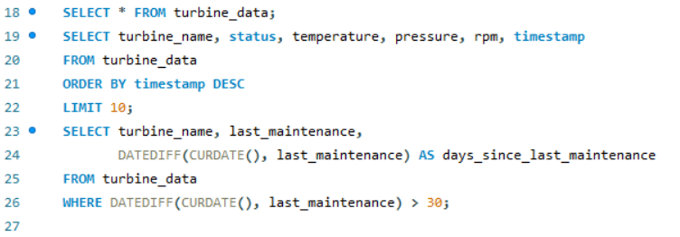
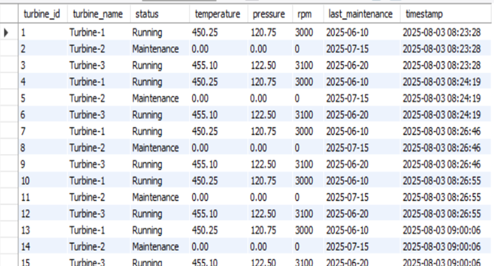
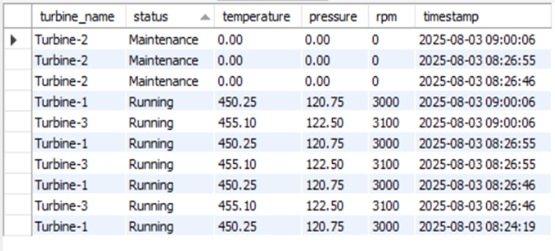

Developed a demo Turbine Data Management System during my internship at OPGC, designing a structured database to store and manage turbine operational data such as status, temperature, pressure, RPM, and maintenance schedules. Implemented optimized SQL queries for efficient data retrieval, updates, and reporting, which improved data accessibility and supported real-time monitoring and informed decision-making processes.
Built a Turbine Data Management System at OPGC, designing a structured database and optimized SQL workflows to enable fast, accurate reporting and real-time turbine performance monitoring.
Project Documentation: Click here
Code for generating the table
Sample Data Insertion
To retrieve turbine logs
Integrated Turbine Monitoring Log
Real-Time Turbine Operation Data
Turbine Maintenance Schedule Table
This project was created for demonstration and academic learning purposes, and does not incorporate real-time sensor connectivity.